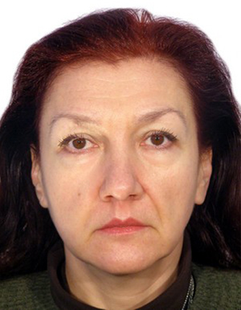

Мартинович Лариса Ярославівна
старший викладач
Основні публікації:
Індексовані в Scopus чи Web of Science:
- Martynovych Larysa, Gunchenko Yurii, Shugailo Yurii, Bercov Yurii, Slutskyi Dmytro, Smirnov Kostiantyn. Design of ternary decoder / CEUR Workshop Proceedings, 2020. Vol. 2683. P. 285 – 290.
- Gunchenko Yurii О,, , Martynovych Larysa Y, Mezhuyev Vitaliy, Shugailo Yurii, B, Bercov Yurii, M, Design of a ternary RS-trigger, 2021 7th International Conference on Computer Technology Applications ICCTA (2021 July 13-15, 2021). Vienna, Austria.2021.
- Borys Panchenko, Liudmyla Bukata, Denys Bahachuk, Larysa Martynovych, Oksana Zui Cluster Modieling of the Interaction of Statyonary SH-Waves With a System of Curvilinear Cracks in a Half-Space - прийнято до публікації
- Vitaliy Mezhuyev , Vladyslav Mykhailenko , Larysa Martynovych , Hanna Korenkova , Valerii Leshchenko , Sergii Stukalov Intellectual Improvement of the Control System for Harmful Emissions of a Ship's Utilizing Boiler//Information Control Systems & Technologies 2023, Odesa, Ukraine, September 21–23, 2023. CEUR Vol-3513- P153-162
У наукових виданнях, включених до переліку наукових фахових видань України:
- Panchenko, B., Bukata, L., Bahachuk, D., Martynovych, L. and Zui, O. (2024) “Cluster modeling of the interaction of statyonary SH-waves with a system of curvilinear cracks in a half-space”, International Scientific Technical Journal "Problems of Control and Informatics", 69(2), pp. 47–60. doi: 10.34229/1028-0979-2024-2-4.
- Мартинович, Л., Гунченко, Ю., Шугайло, Ю., & Берков, Ю. Проектування та синтез трійкових логічних елементів. Computer Systems and Information Technologies. 2022. № 4. Р. 52–60.
- Gunchenko Yurii, Shugailo Yurii, BercovYurii, Martynovych Larysa. Analysis of the current state of the elements of ternary logic Зб. наук. пр. Військового інституту Київського національного університету імені Тараса Шевченка. Київ. 2022. № 76. С. 88 – 101.
Тези доповідей:
- Dr.Sci. Mykhailenko V., Leshchenko V., Martynovych L., Ph.D. Korenkova H. Neural network control with prediction of the dynamics of parameters of a complex ship object the хii international scientific-practical conference «Information Control Systems and Technologies» (ICST- ODESA – 2024) 23 th – 25 th September, 2024
- Коренкова Г.В., Мартинович Л.Я., Зуй О.М. - Вплив використання інформаційних технологій та онлайн-ресурсів на якість освіти. vіі всеукраїнська науково-практична конференція традиційні та інноваційні підходи розвитку сучасної освіти в україні. 16-17 травня 2024 М.Одеса
- Martynovych Larysa, Gunchenko Yurii, Shugailo Yurii, Bercov Yurii Slutskyi Dmytro, Smirnov Kostiantyn. Design of ternary decoder. International Scientific and Practical Conference «Intellectual Systems and Information Technologies». Odesa. 2021. P. 304 – 309.
- Гунченко Ю., Мартинович Л., Тихонова К., Слуцький Д.. Концепція побудови пристроїв для трійкової логіки Тези доповідей V Всеукраїнській науково-практичній конференції «Перспективні напрямки сучасної електроніки, інформаційних і комп'ютерних систем MEICS-2020». Дніпро. 2020. С. 93 – 94.
- Мартинович Л. Я., Слуцький Д. В., Смірнов К. О., Гунченко Ю. О., Побудова елементів трійкових систем на основі багатопорогового елемента багатозначної логіки. Інформатика, інформаційні системи та технології: тези доповідей вісімнадцятої всеукраїнської конференції студентів і молодих науковців. (Одеса, 23 квітня 2021 р). Одеса. 2021. С. с.65-67
- Гунченко Ю.О., Мартинович Л.Я., Слуцький Д., Смірнов К., Метод побудови трійкових унарних функцій, "ІНФОРМАЦІЙНІ ТЕХНОЛОГІЇ ТА КОМП’ЮТЕРНЕ МОДЕЛЮВАННЯ" матеріали міжнародної науково-практичної конференції (5-10 липня 2021 р). Івано-Франківськ. 2021
- Мартинович Л. Я., Берхштейн Д. Ш., Смірнов К. О., Гунченко Ю. О., Апаратні засоби для програмування ігрової системи. Інформатика, інформаційні системи та технології: тези доповідей вісімнадцятої всеукраїнської конференції студентів і молодих науковців. (Одеса, 23 квітня 2021 р). Одеса. 2021. С.37-40.
- Мартинович Л. Я., Волинець О. О., Слуцький Д. В., Гунченко Ю. О. Системи класифікації інформації. Інформатика, інформаційні системи та технології: тези доповідей вісімнадцятої всеукраїнської конференції студентів і молодих науковців. (Одеса, 23 квітня 2021 р). Одеса. 2021. С.56-58.
- Мартинович Л. Я., Аль-Омарі А. О., Слуцький Д. В., Смірнов К. О. Методи завадостійкого кодування у цифрових системах. Інформатика, інформаційні системи та технології: тези доповідей вісімнадцятої всеукраїнської конференції студентів і молодих науковців. (Одеса, 23 квітня 2021 р). Одеса. 2021. С.135-137
- Гунченко Ю.О., Мартинович Л.Я., Аль-Омарі А.О., Аналіз завадостійких кодів за допомогою програмного комплексу. Тези доповідей Всеукраїнської науково-практичної конференції молодих вчених, ад’юнктів, слухачів, курсантів і студентів "Молодіжна військова наука у Київському національному університеті імені Тараса Шевченка" Київ. 2021. С. 99-100.
- С. Шворов, А.С. Юхименко, Л. Мартинович, І. Шаріпова Побудова системи моніторингу та керування безпілотними збиральними комбайнами. // 9-та Міжнародна науково-технічна конференція «Інформаційні системи та технології ICT 2020». – ХНУРЕ.2020. – С. 163 – 165.
- Гунченко Ю.О., Мартинович Л.Я., Волинець О.О. Дослідження нейронних мереж для класифікації зображень. Тези доповідей Всеукраїнської науково-практичної конференції молодих вчених, ад’юнктів, слухачів, курсантів і студентів "Молодіжна військова наука у Київському національному університеті імені Тараса Шевченка" Київ.2021. С.103-104.
Монографії:
- Gunchenko Yurii, Shvorov Sergey, Davidenko Taras, Yukhimenko Anna, Slutskyi Dmytro, Martynovych Larysa. Intelligent biomass collection processes management system for biogas harvests by autonomous unmanned aerial vehicles. Part of the monograph “Intellectual systems and information technologies”. Vienna: Premier Publishing s.r.o. 2021. P. 69 - 99. DOI https://doi.org/10.29013/GunchenkoY.ISAIT.2021.184.
Патент на винахід або корисну модель:
- Трійковий RS-тригер: пат. 149386 Україна МПК (2021.01) Y03K 19/00. Гунченко Ю.О., Глауберман М.А., Мартинович Л.Я., Романенко К.Є., Межуєв В.І., Маслій Н.Д., Шугайло Ю.Б., Берков Ю.М., Фастиковський П.П. - № u 202104077, заявл. 13.07.2021, опубл. 10.11.2021, бюл. № 45.
Навчально-методичні посібникі
- Мартинович Л.Я., Гунченко Ю.О., Коренкова Г.В., Шугайло Ю.Б. Технології проектування комп’ютерних систем: Методичні вказівки до виконання курсового проекту. «ТЕС»: Одеса 2022, - 28с.
- Михайленко В.С., Гунченко Ю.О., Мартинович Л.Я. Нечітке моделювання в інформаційних технологіях: Методичні вказівки до виконання лабораторних робіт. «ТЕС»: Одеса 2022, 60 с.
- Коренкова Г.В., Мартинович Л.Я., Зуй О.М. ТЕОРІЯ АЛГОРИТМІВ. Методичні вказівки до виконання лабораторних робіт - «ТЕС»: Одеса 2023, - 68с.
Експерт НАЗЯВО
за спеціальністю 122 - Комп’ютерні науки, 121 - Інженерія програмного забезпечення, протокол №6 від 25.04.2023, додаток 6.Підвищення кваліфікації, сертифікати:
- Сертифікат про володіння іноземною мовою (англійська) на рівні В2 GE 177-ONU2021
- Стажування на кафедрі інформаційних технологій Одеського державного екологічного університету з 20 лютого 2023 р. по 2 квітня 2023 р. за програмою «Інформаційні технології в професійній діяльності фахівця» обсягом 180 академічних годин, 6 кредитів ЄКТС (дистанційно). Затверджено Наказ № 281а-18 від 22.02.2023 р
- Член ГО “Прогресильні”, сертифікат № 0678/25, дійсний до 31.12.2025р.
Дисципліни, що викладає:
- Введення в спеціальність Робоча програма; Силабус
- Безпека хмарних технологій Робоча програма; Силабус
- Паралельні та розподілені обчислювання Робоча програма; Силабус
- Технології проектування компютерних систем Робоча програма; Силабус
- Розподілені системи та паралельні обчислення Робоча програма; Силабус